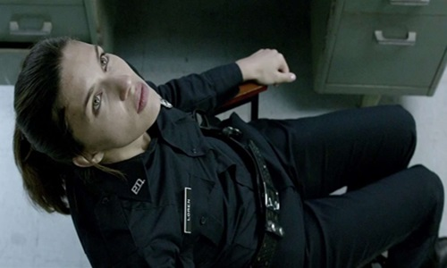
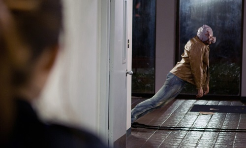
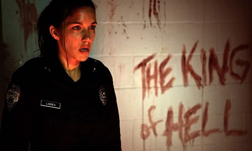

A rookie cop is tasked with taking the last shift at a police station before it is permanently closed, but it turns into a living nightmare. A Manson-inspired horror film centering around a transitioning police station. Officer Jessica Loren has been assigned to wait for a Hazmat team to pick up bio-hazardous waste from the station's armory. But unbeknownst to Jessica, cult Leader John Michael Paymon has haunted the department ever since he and two of this followers committed suicide a year ago to date. And now, Jessica is about to find out how dangerous they can be when she's left alone on this Last Shift.


